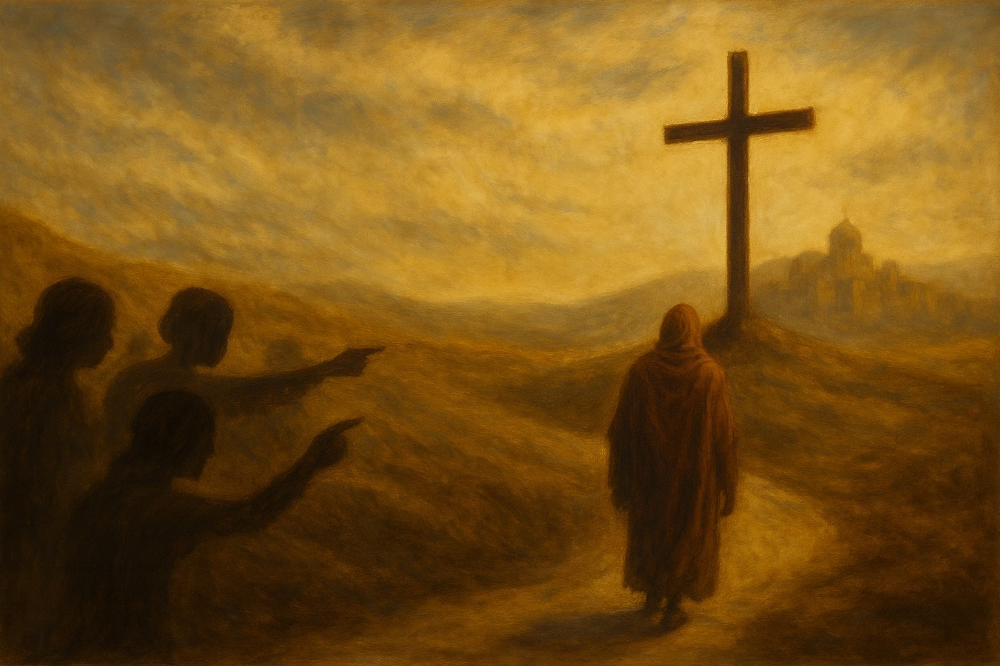

«Porque los cuerpos de los animales cuya sangre es traída al lugar santísimo por el sumo sacerdote como ofrenda por el pecado, son quemados fuera del campamento. Por eso también Jesús, para santificar al pueblo mediante Su propia sangre, padeció fuera de la puerta de la ciudad. Salgamos, pues, adonde Él está, fuera del campamento, llevando Su oprobio. Porque aquí no tenemos ciudad permanente, sino que buscamos la que está por venir.» (Hebreos 13:11–14, NBLA)
Salgamos a Él, llevando Su oprobio. Si persiguieron a Jesús, seguramente nos tratarán a nosotros de la misma manera… pero salimos a Él fuera del campamento y dejamos nuestra vida pasada. Estamos viajando a la ciudad celestial de Dios.
Así es la imagen: «Puedes reírte de mí todo lo que quieras. Puedes chismear sobre mí. Puedes mentir sobre mí. Puedes perseguirme. Puedes publicar mentiras sobre mí en las redes sociales. Puedes quitarme mis cosas. Puedes dejar de ser mi amigo. Puedes despedirme de mi trabajo. Puedes lastimarme. Puedes señalarme con el dedo. Puedes llamarme raro, tonto, de mente pequeña, controlado por la religión, una oveja. Dijiste las mismas cosas sobre mi Señor, así que realmente no importa si dices las mismas cosas sobre mí. He dejado mi antigua vida donde vivía como tú, y ahora estoy buscando la ciudad de Dios.»
A Él sea la gloria.